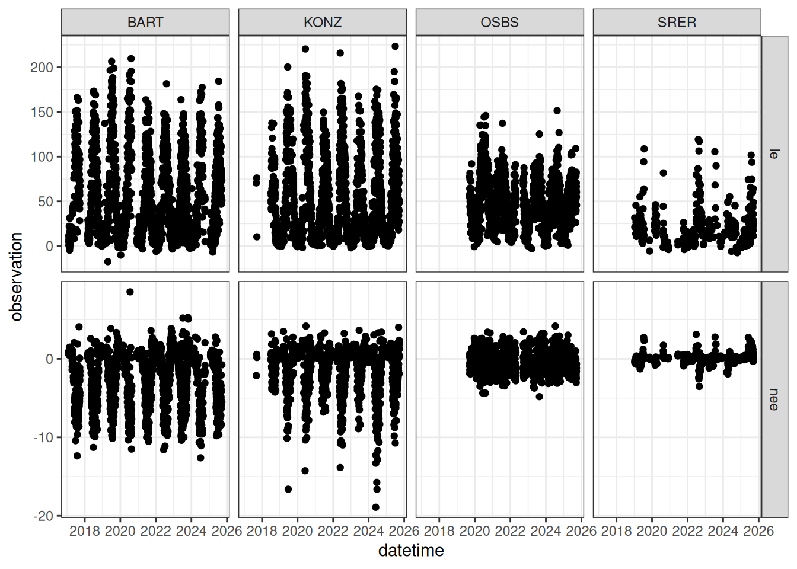
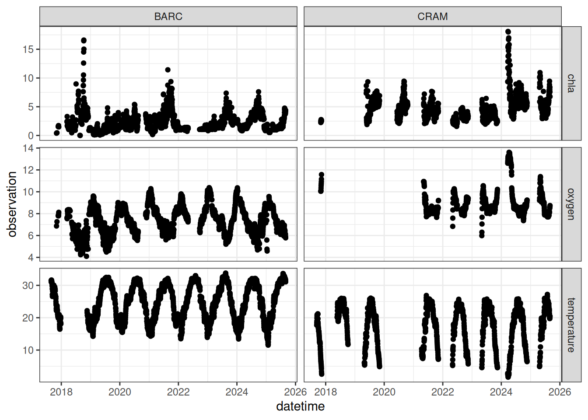
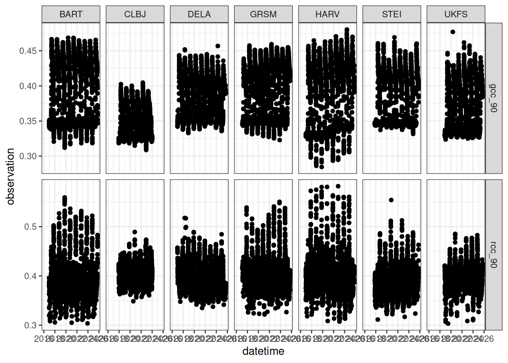
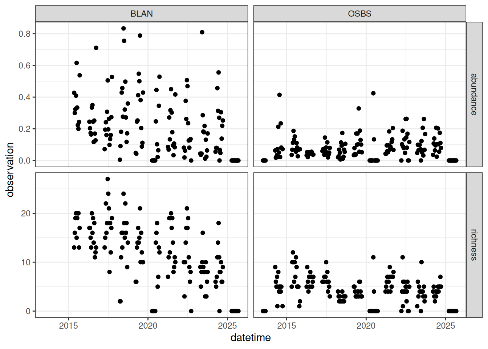
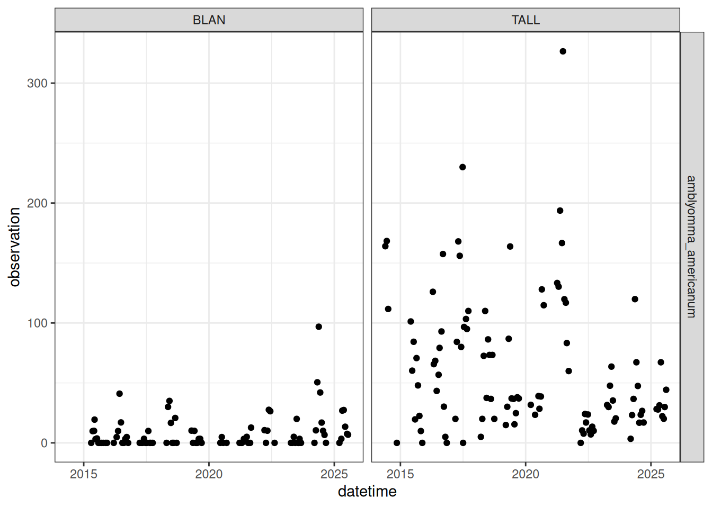

| variable | duration | Description | forecast horizon | Latency |
|---|---|---|---|---|
| le | P1D | daily mean latent heat flux (W/m2) | 30 days | ~ 5 days |
| nee | P1D | daily mean Net ecosystem exchange (gC/m2/day) | 30 days | ~ 5 days |
| le | PT30M | 30 minute mean latent heat flux (W/m2) | 10 days | ~ 5 days |
| nee | PT30M | 30 minute mean net ecosystem exchange (umol/m2/s) | 10 days | ~ 5 days |
tl;dr: Forecast the targets!
The “targets” are time-series of National Ecological Observatory Network (NEON) data for use in model development and forecast evaluation.
The targets are updated as new NEON data is made available.
The 10 targets were specifically chosen to include ecosystem, community, and population dynamics and are represented by five “themes”. The themes and links to targets files are included below.
Where to start
If are you are getting started, we recommend the following focal sites for each of the five “themes”. The first site in the list is the recommended starting site.
- Terrestrial: BART, OSBS, KONZ, SRER
- Aquatics: BARC, CRAM
- Phenology: HARV, BART, STEI, UKFS, GRSM, DELA, CLBJ
- Beetles: BLAN, OSBS
- Ticks: BLAN, TALL
As you develop your forecasting skills and want to expand to more sites, the targets are available at all 81 NEON sites. You may also consider submitting forecasts to sites that match your interests. For example, a class being taught in the winter may be more interested in forecasting southern sites while a summer class may focus on more northern sites.
More information about NEON sites can be found in the site metadata and on NEON’s website
Explore the targets and themes
Information on the targets files for the five “themes” is below. In the tables,
“duration” is the time-step of the variable where
PT30Mis a 30-minute mean,P1Dis a daily mean, andP1Wis a weekly total.The “forecast horizon” is the number of days-ahead that we want you to forecast.
The “latency” is the time between data collection and data availability in the targets file

The exchange of water and carbon dioxide between the atmosphere and the land is akin to earth’s terrestrial ecosystems breathing rate and lung capacity.
The terrestrial flux theme challenges you to forecast the gas exchange at up to 47 sites across the U.S.
There are two variables and two time-steps (or duration) that you can forecast.
Daily mean
The daily mean target file is located at the following URL.
url_P1D <- "https://sdsc.osn.xsede.org/bio230014-bucket01/challenges/targets/project_id=neon4cast/duration=P1D/terrestrial_daily-targets.csv.gz"You can directly load it into R using the following
terrestrial_targets <- read_csv(url_P1D, show_col_types = FALSE)The file contains the following columns
| project_id | site_id | datetime | duration | variable | observation |
|---|---|---|---|---|---|
| neon4cast | BART | 2017-02-06 | P1D | le | 11.5794551 |
| neon4cast | BART | 2017-02-07 | P1D | le | 4.8951620 |
| neon4cast | BART | 2017-02-09 | P1D | le | 7.5281656 |
| neon4cast | BART | 2017-02-11 | P1D | le | 1.1577581 |
| neon4cast | BART | 2017-02-12 | P1D | le | 0.1999174 |
| neon4cast | BART | 2017-02-13 | P1D | le | 10.9325370 |
and the time series for the focal sites
terrestrial_targets |>
filter(site_id %in% terrestrial_focal_sites) |>
ggplot(aes(x = datetime, y = observation)) +
geom_point() +
facet_grid(variable~site_id, scales = "free_y") +
theme_bw()
30 minute
The 30 minute duration targets are designed for forecasting sub-daily carbon and water dynamics. The URL is found at:
url_PT30M <- "https://sdsc.osn.xsede.org/bio230014-bucket01/challenges/targets/project_id=neon4cast/duration=PT30M/terrestrial_30min-targets.csv.gz"Learn more at: https://projects.ecoforecast.org/neon4cast-docs/Terrestrial.html

Freshwater surface water temperature, dissolved oxygen, and chlorophyll-a all influence drinking water quality, are critical for life in aquatic environments, and can represent the health of the ecosystem.
The aquatics theme challenges you to forecast daily mean water quality variables at up-to 7 lakes and 27 river/stream NEON sites.
| variable | duration | Description | horizon | Latency |
|---|---|---|---|---|
| chla | P1D | daily mean Chlorophyll-a (ug/L) | 30 days | ~ 3 days |
| oxygen | P1D | Surface Mean Daily Dissolved Oxygen Concentration (mgL) | 30 days | ~ 3 days |
| temperature | P1D | Surface Mean Daily Water Temperature (Celsius) | 30 days | ~ 3 days |
The daily mean target file is located at the following URL.
url <- "https://sdsc.osn.xsede.org/bio230014-bucket01/challenges/targets/project_id=neon4cast/duration=P1D/aquatics-targets.csv.gz"You can directly load it into R using the following
aquatics_targets <- read_csv(url, show_col_types = FALSE)The file contains the following columns
| project_id | site_id | datetime | duration | variable | observation |
|---|---|---|---|---|---|
| neon4cast | ARIK | 2016-08-12 | P1D | oxygen | 3.402153 |
| neon4cast | ARIK | 2016-08-13 | P1D | oxygen | 4.156236 |
| neon4cast | ARIK | 2016-08-14 | P1D | oxygen | 4.071263 |
| neon4cast | ARIK | 2016-08-15 | P1D | oxygen | 3.909114 |
| neon4cast | ARIK | 2016-08-16 | P1D | oxygen | 3.862653 |
| neon4cast | ARIK | 2016-08-17 | P1D | oxygen | 4.354618 |
and the time series for the focal sites
aquatics_targets |>
filter(site_id %in% aquatics_focal_sites) |>
ggplot(aes(x = datetime, y = observation)) +
geom_point() +
facet_grid(variable~site_id, scales = "free_y") +
theme_bw()Warning: Removed 859 rows containing missing values or values outside the scale range
(`geom_point()`).
Water temperature at multiple depths measured at the UTC 00 hour are available for the 7 NEON lake sites. These data can be used for model development but will not be used for forecast evaluation.
url <- "https://sdsc.osn.xsede.org/bio230014-bucket01/challenges/supporting_data/project_id=neon4cast/aquatics-expanded-observations.csv.gz"Learn more at: https://projects.ecoforecast.org/neon4cast-docs/Aquatics.html

Phenology (the changes in plant canopies over the year) has been identified as one of the primary ecological fingerprints of global climate change.
The greenness and redness, as measured by a camera looking down at the top of vegetation are a quantitative measure of phenology. The phenology theme challenges you to forecast daily mean greeness and/or redness at up-to 47 terrestrial NEON sites.
url <- "https://sdsc.osn.xsede.org/bio230014-bucket01/challenges/targets/project_id=neon4cast/duration=P1D/phenology-targets.csv.gz"
read_csv(url, show_col_types = FALSE) |>
distinct(variable, duration) |>
left_join(target_metadata, by = c("variable","duration")) |>
filter(variable %in% c("gcc_90","rcc_90")) |>
select(-class) |>
knitr::kable()| variable | duration | Description | horizon | Latency |
|---|---|---|---|---|
| gcc_90 | P1D | Green chromatic coordinate is the ratio of the green digital number to the sum of the red, green, blue digital numbers from a digital camera. | 30 days | ~ 2 days |
| rcc_90 | P1D | Red chromatic coordinate is the ratio of the Red digital number to the sum of the red, green, blue digital numbers from a digital camera. | 30 days | ~ 2 days |
The daily mean target file is located at the following URL.
url <- "https://sdsc.osn.xsede.org/bio230014-bucket01/challenges/targets/project_id=neon4cast/duration=P1D/phenology-targets.csv.gz"You can directly load it into R using the following
phenology_targets <- read_csv(url, show_col_types = FALSE)The file contains the following columns
| project_id | site_id | datetime | duration | variable | observation |
|---|---|---|---|---|---|
| neon4cast | ABBY | 2017-05-30 | P1D | gcc_90 | 0.41659 |
| neon4cast | ABBY | 2017-05-31 | P1D | gcc_90 | 0.41570 |
| neon4cast | ABBY | 2017-06-01 | P1D | gcc_90 | 0.41780 |
| neon4cast | ABBY | 2017-06-02 | P1D | gcc_90 | 0.41539 |
| neon4cast | ABBY | 2017-06-03 | P1D | gcc_90 | 0.42216 |
| neon4cast | ABBY | 2017-06-04 | P1D | gcc_90 | 0.41659 |
and the time series for the focal sites
phenology_targets |>
filter(site_id %in% phenology_focal_sites) |>
ggplot(aes(x = datetime, y = observation)) +
geom_point() +
facet_grid(variable~site_id, scales = "free_y") +
theme_bw()Warning: Removed 8186 rows containing missing values or values outside the scale range
(`geom_point()`).
Learn more at: https://projects.ecoforecast.org/neon4cast-docs/Phenology.html

Sentinel species (such as beetles) can give forewarning of environmental risk to humans, so are particularly useful for such monitoring and forecasting efforts because they can provide surrogates for other co-located components of biodiversity.
The beetles theme challenges you to forecast weekly ground beetles (Family: Carabidae) abundance and richness (two measures of biodiversity) at up-to 47 terrestrial NEON sites.
| variable | duration | Description | horizon | Latency |
|---|---|---|---|---|
| abundance | P1W | Total number of carabid individuals per trap-night, estimated each week of the year at each NEON site | 1 year | ~ 6 months |
| richness | P1W | Total number of unique ‘species’ in a sampling bout for each NEON site each week. | 1 year | ~ 6 months |
The daily mean target file is located at the following URL.
url <- "https://sdsc.osn.xsede.org/bio230014-bucket01/challenges/targets/project_id=neon4cast/duration=P1W/beetles-targets.csv.gz"You can directly load it into R using the following
beetles_targets <- read_csv(url, show_col_types = FALSE)The file contains the following columns
| project_id | site_id | datetime | duration | variable | observation |
|---|---|---|---|---|---|
| neon4cast | ABBY | 2016-09-12 | P1W | abundance | 1.0489796 |
| neon4cast | ABBY | 2016-09-12 | P1W | richness | 14.0000000 |
| neon4cast | ABBY | 2016-09-26 | P1W | abundance | 4.4535714 |
| neon4cast | ABBY | 2016-09-26 | P1W | richness | 13.0000000 |
| neon4cast | ABBY | 2017-05-01 | P1W | abundance | 0.0553571 |
| neon4cast | ABBY | 2017-05-01 | P1W | richness | 10.0000000 |
and the time series for the focal sites
beetles_targets |>
filter(site_id %in% beetles_focal_sites) |>
ggplot(aes(x = datetime, y = observation)) +
geom_point() +
facet_grid(variable~site_id, scales = "free_y") +
theme_bw()
Learn more at: https://projects.ecoforecast.org/neon4cast-docs/Beetles.html

Target species for the tick population forecasts are Amblyomma americanum nymphal ticks. A. americanum is a vector of ehrlichiosis, tularemia, and southern tick-associated rash illness. The species is present in the eastern United States, and their populations are expanding. There is a correlation between tick population abundance and disease incidence, meaning forecasts for tick abundance have the potential to aid in our understanding of disease risk through time and space.
The beetles theme challenges you to forecast weekly Amblyomma americanum nymphal tick abundance at up-to 9 terrestrial NEON sites.
| variable | duration | Description | horizon | Latency |
|---|---|---|---|---|
| amblyomma_americanum | P1W | The density of Amblyomma americanum nymphs per week (ticks per 1600m^2) | 1 year | ~ 6 months |
The weekly target file is located at the following URL.
"https://sdsc.osn.xsede.org/bio230014-bucket01/challenges/targets/project_id=neon4cast/duration=P1W/ticks-targets.csv.gz"[1] "https://sdsc.osn.xsede.org/bio230014-bucket01/challenges/targets/project_id=neon4cast/duration=P1W/ticks-targets.csv.gz"You can directly load it into R using the following
ticks_targets <- read_csv(url, show_col_types = FALSE)The file contains the following columns
| project_id | site_id | datetime | duration | variable | observation |
|---|---|---|---|---|---|
| neon4cast | BLAN | 2015-04-20 | P1W | amblyomma_americanum | 0.000000 |
| neon4cast | BLAN | 2015-05-11 | P1W | amblyomma_americanum | 9.815951 |
| neon4cast | BLAN | 2015-06-01 | P1W | amblyomma_americanum | 10.000000 |
| neon4cast | BLAN | 2015-06-08 | P1W | amblyomma_americanum | 19.393939 |
| neon4cast | BLAN | 2015-06-22 | P1W | amblyomma_americanum | 3.137255 |
| neon4cast | BLAN | 2015-07-13 | P1W | amblyomma_americanum | 3.661327 |
and the time series for the focal sites
ticks_targets |>
filter(site_id %in% ticks_focal_sites) |>
ggplot(aes(x = datetime, y = observation)) +
geom_point() +
facet_grid(variable~site_id, scales = "free_y") +
theme_bw()
Learn more at: https://projects.ecoforecast.org/neon4cast-docs/Ticks.html
Explore the sites
The following table lists all the sites in the NEON Ecological Forecasting Challenge. The columns with “theme” names incidate whether that site is included in that theme’s target file.
| site_id | field_site_name | terrestrial | aquatics | phenology | ticks | beetles |
|---|---|---|---|---|---|---|
| ABBY | Abby Road NEON | 1 | 0 | 1 | 0 | 1 |
| ARIK | Arikaree River NEON | 0 | 1 | 0 | 0 | 0 |
| BARC | Lake Barco NEON | 0 | 1 | 0 | 0 | 0 |
| BARR | Utqiaġvik NEON | 1 | 0 | 1 | 0 | 1 |
| BART | Bartlett Experimental Forest NEON | 1 | 0 | 1 | 0 | 1 |
| BIGC | Upper Big Creek NEON | 0 | 1 | 0 | 0 | 0 |
| BLAN | Blandy Experimental Farm NEON | 1 | 0 | 1 | 1 | 1 |
| BLDE | Blacktail Deer Creek NEON | 0 | 1 | 0 | 0 | 0 |
| BLUE | Blue River NEON | 0 | 1 | 0 | 0 | 0 |
| BLWA | Black Warrior River NEON | 0 | 1 | 0 | 0 | 0 |
| BONA | Caribou-Poker Creeks Research Watershed NEON | 1 | 0 | 1 | 0 | 1 |
| CARI | Caribou Creek NEON | 0 | 1 | 0 | 0 | 0 |
| CLBJ | Lyndon B. Johnson National Grassland NEON | 1 | 0 | 1 | 0 | 1 |
| COMO | Como Creek NEON | 0 | 1 | 0 | 0 | 0 |
| CPER | Central Plains Experimental Range NEON | 1 | 0 | 1 | 0 | 1 |
| CRAM | Crampton Lake NEON | 0 | 1 | 0 | 0 | 0 |
| CUPE | Rio Cupeyes NEON | 0 | 1 | 0 | 0 | 0 |
| DCFS | Dakota Coteau Field Site NEON | 1 | 0 | 1 | 0 | 1 |
| DEJU | Delta Junction NEON | 1 | 0 | 1 | 0 | 1 |
| DELA | Dead Lake NEON | 1 | 0 | 1 | 0 | 1 |
| DSNY | Disney Wilderness Preserve NEON | 1 | 0 | 1 | 0 | 1 |
| FLNT | Flint River NEON | 0 | 1 | 0 | 0 | 0 |
| GRSM | Great Smoky Mountains National Park NEON | 1 | 0 | 1 | 0 | 1 |
| GUAN | Guanica Forest NEON | 1 | 0 | 1 | 0 | 1 |
| GUIL | Rio Guilarte NEON | 0 | 1 | 0 | 0 | 0 |
| HARV | Harvard Forest & Quabbin Watershed NEON | 1 | 0 | 1 | 0 | 1 |
| HEAL | Healy NEON | 1 | 0 | 1 | 0 | 1 |
| HOPB | Lower Hop Brook NEON | 0 | 1 | 0 | 0 | 0 |
| JERC | The Jones Center At Ichauway NEON | 1 | 0 | 1 | 0 | 1 |
| JORN | Jornada Experimental Range NEON | 1 | 0 | 1 | 0 | 1 |
| KING | Kings Creek NEON | 0 | 1 | 0 | 0 | 0 |
| KONA | Konza Prairie Agroecosystem NEON | 1 | 0 | 1 | 0 | 1 |
| KONZ | Konza Prairie Biological Station NEON | 1 | 0 | 1 | 1 | 1 |
| LAJA | Lajas Experimental Station NEON | 1 | 0 | 1 | 0 | 1 |
| LECO | LeConte Creek NEON | 0 | 1 | 0 | 0 | 0 |
| LENO | Lenoir Landing NEON | 1 | 0 | 1 | 1 | 1 |
| LEWI | Lewis Run NEON | 0 | 1 | 0 | 0 | 0 |
| LIRO | Little Rock Lake NEON | 0 | 1 | 0 | 0 | 0 |
| MART | Martha Creek NEON | 0 | 1 | 0 | 0 | 0 |
| MAYF | Mayfield Creek NEON | 0 | 1 | 0 | 0 | 0 |
| MCDI | McDiffett Creek NEON | 0 | 1 | 0 | 0 | 0 |
| MCRA | McRae Creek NEON | 0 | 1 | 0 | 0 | 0 |
| MLBS | Mountain Lake Biological Station NEON | 1 | 0 | 1 | 0 | 1 |
| MOAB | Moab NEON | 1 | 0 | 1 | 0 | 1 |
| NIWO | Niwot Ridge NEON | 1 | 0 | 1 | 0 | 1 |
| NOGP | Northern Great Plains Research Laboratory NEON | 1 | 0 | 1 | 0 | 1 |
| OAES | Marvin Klemme Range Research Station NEON | 1 | 0 | 1 | 0 | 1 |
| OKSR | Oksrukuyik Creek NEON | 0 | 1 | 0 | 0 | 0 |
| ONAQ | Onaqui NEON | 1 | 0 | 1 | 0 | 1 |
| ORNL | Oak Ridge NEON | 1 | 0 | 1 | 1 | 1 |
| OSBS | Ordway-Swisher Biological Station NEON | 1 | 0 | 1 | 1 | 1 |
| POSE | Posey Creek NEON | 0 | 1 | 0 | 0 | 0 |
| PRIN | Pringle Creek NEON | 0 | 1 | 0 | 0 | 0 |
| PRLA | Prairie Lake NEON | 0 | 1 | 0 | 0 | 0 |
| PRPO | Prairie Pothole NEON | 0 | 1 | 0 | 0 | 0 |
| PUUM | Pu’u Maka’ala Natural Area Reserve NEON | 1 | 0 | 1 | 0 | 1 |
| REDB | Red Butte Creek NEON | 0 | 1 | 0 | 0 | 0 |
| RMNP | Rocky Mountains NEON | 1 | 0 | 1 | 0 | 1 |
| SCBI | Smithsonian Conservation Biology Institute NEON | 1 | 0 | 1 | 1 | 1 |
| SERC | Smithsonian Environmental Research Center NEON | 1 | 0 | 1 | 1 | 1 |
| SJER | San Joaquin Experimental Range NEON | 1 | 0 | 1 | 0 | 1 |
| SOAP | Soaproot Saddle NEON | 1 | 0 | 1 | 0 | 1 |
| SRER | Santa Rita Experimental Range NEON | 1 | 0 | 1 | 0 | 1 |
| STEI | Steigerwaldt-Chequamegon NEON | 1 | 0 | 1 | 0 | 1 |
| STER | North Sterling NEON | 1 | 0 | 1 | 0 | 1 |
| SUGG | Lake Suggs NEON | 0 | 1 | 0 | 0 | 0 |
| SYCA | Sycamore Creek NEON | 0 | 1 | 0 | 0 | 0 |
| TALL | Talladega National Forest NEON | 1 | 0 | 1 | 1 | 1 |
| TEAK | Lower Teakettle NEON | 1 | 0 | 1 | 0 | 1 |
| TECR | Teakettle Creek - Watershed 2 NEON | 0 | 1 | 0 | 0 | 0 |
| TOMB | Lower Tombigbee River NEON | 0 | 1 | 0 | 0 | 0 |
| TOOK | Toolik Lake NEON | 0 | 1 | 0 | 0 | 0 |
| TOOL | Toolik Field Station NEON | 1 | 0 | 1 | 0 | 1 |
| TREE | Treehaven NEON | 1 | 0 | 1 | 0 | 1 |
| UKFS | University of Kansas Field Station NEON | 1 | 0 | 1 | 1 | 1 |
| UNDE | University of Notre Dame Environmental Research Center NEON | 1 | 0 | 1 | 0 | 1 |
| WALK | Walker Branch NEON | 0 | 1 | 0 | 0 | 0 |
| WLOU | West St Louis Creek NEON | 0 | 1 | 0 | 0 | 0 |
| WOOD | Chase Lake National Wildlife Refuge NEON | 1 | 0 | 1 | 0 | 1 |
| WREF | Wind River Experimental Forest NEON | 1 | 0 | 1 | 0 | 1 |
| YELL | Yellowstone National Park NEON | 1 | 0 | 1 | 0 | 1 |